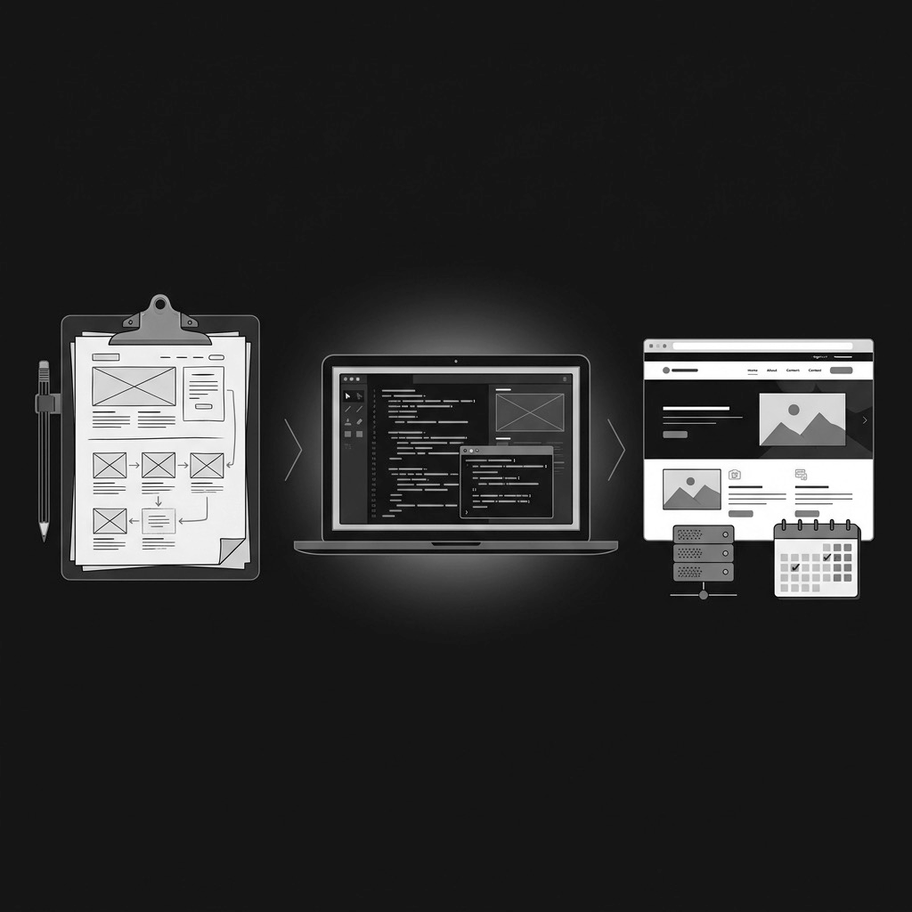
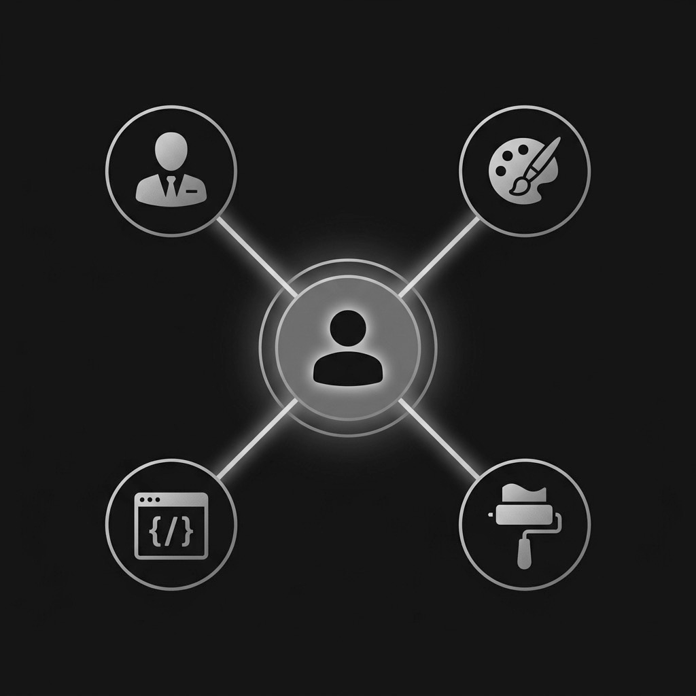
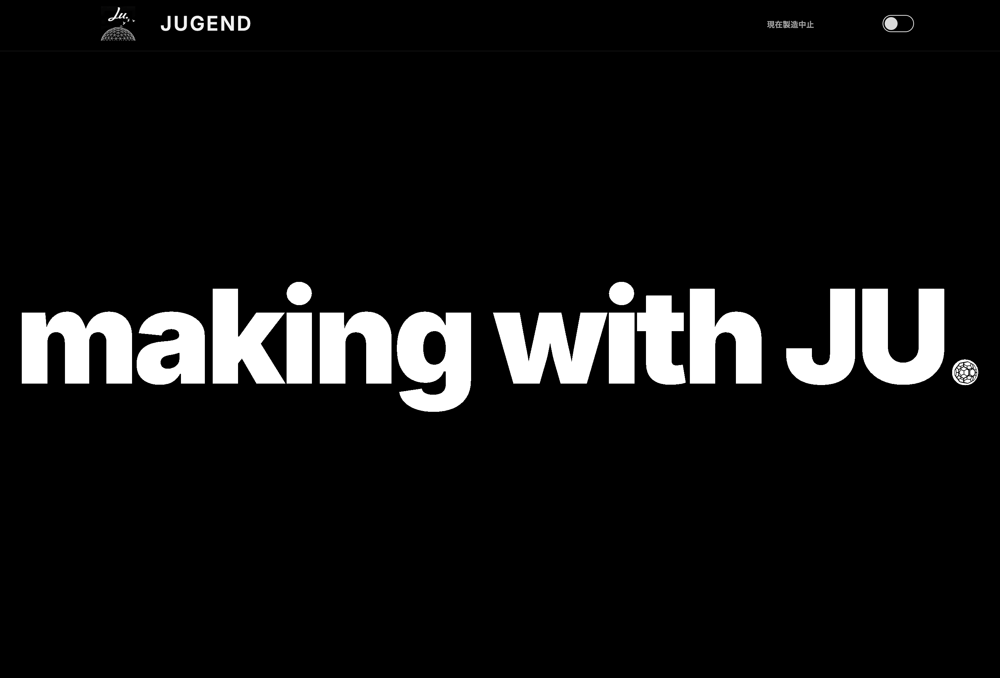

製造業、卸売、制作会社など、BtoB下請け企業様の現場では深刻なジレンマが起きています。
製品図面や見積り基準などをクラウドAIに入力することは、情報漏洩リスクを伴うため、導入に踏み切れないのが実情です。
AIを導入できない現場では、従来の人海戦術と外注依存が続いています。
日々の制作からWeb更新まで外部への依存が続き、細かいコストが膨張し続けています。
確認作業や属人的な手作業が残り、現場の負担と進行の遅れを招きます。
複数の外注先を束ねる伝言ゲームにより、プロジェクトの進行管理自体が破綻しやすくなります。
長期のBtoBであるほど、属人的な手作業や確認作業にお困りのはずです。進行遅延や管理のパンクを招く原因を解決しようにも、適切な解決策が見つからないのが実情です。
大掛かりなシステム導入ではなく、現場のコストや管理工数を圧迫する要因をAIで見直します。制作進行の時間短縮を図りながら、チーム本来のポテンシャルを最大化します。
手元のローカル環境や、管理されたクローズドなデータ構造を適切に選択し、外部にデータを送信しない仕組みを整備します。
機密情報を扱う現場でも安心してAIによる効率化の恩恵を受けることが可能になります。
過剰に高機能なWebシステムやCMSは排します。AIツールを活用し、実用的なLP・Webページ・バナーを迅速に制作します。
公開先には静的サーバーホスティング等のモダンなホスティングを活用。サーバー維持費を抑え、継続しやすい月額運用体制を構築します。

要件の整理からデータ入稿進行・テストアップ時の確認調整まで、制作プロジェクトの進行調整を引き受けます。
スケジュール調整や関係者間の連絡の橋渡しを月額契約でサポートします。AIを補助的に用いて要件を整理し、現場のペースに沿った円滑な進行をサポートします。

AIツールを要件整理の補助に用いることで、現場のペースに沿った効率的な管理・進行をサポートします。
要件整理
Define Requirements
AI補助・効率化
AI Implementation
制作進行
Production Progress
確認・入稿
Review & Submit
維持・運用
Maintenance
名刺、チラシ、パンフレット、看板等のオフラインクリエイティブに関するOEM制作進行を引き受けます。
業界標準のローカル制作環境を活用し、正確な印刷入稿データの作成と校正実務をサポート。直接的な進行管理で、スムーズな納品を支援します。
両面対応、特殊仕様の名刺・ショップカード等の入稿データ作成
A4〜B2等、各種サイズの販促チラシ・フライヤーのデザインと入稿
会社案内・製品カタログ等の多ページ冊子のレイアウトと入稿対応
屋外・屋内サイン・バナースタンド等の大判印刷用データ作成
Web用バナーから店頭ポスターまで幅広いフォーマットに対応
業界標準DTPツールによる正確な色校正・入稿規格確認を含む進行管理サポート
AIのコード生成・支援能力を引き出し、現場の日常業務を便利にする社内インナーアプリの構築をサポートします。
クライアントへの販売用簡易アプリも、高額なシステム外注を通すことなく、AIとディレクションを組み合わせて実現します。
「何を、どのように動かすか」を明確にします。現場ヒアリングをもとにAIが実現できる範囲で現実的な仕様を整理し、過剰な開発を防ぎます。
AIコード生成ツールを活用して短期間で動作するプロトタイプを構築。試行錯誤のサイクルを高速化し、早期に動作確認できる環境を実現します。
動作検証・修正を経て導入をサポートします。現場で使えるまで徹底フォローします。

私のディレクションの根本思想。ロジックによる機能美を追求したデザイン制作・物理的なプロダクト制作をルーツとしております。
培われたデジタル領域とAIの活用においてもこの考えを適用しています。
無駄な装飾や過剰なシステムを排し、「本当に現場で機能する実務品質」だけを研ぎ澄まして提供いたします。